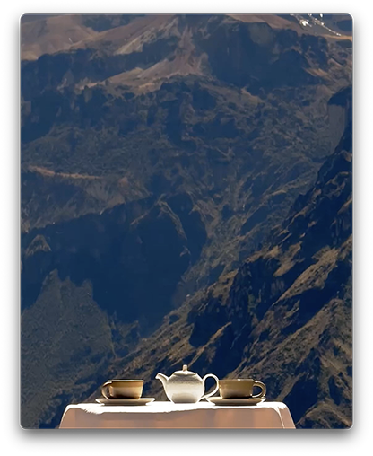
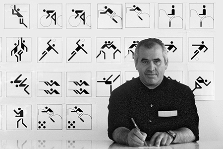
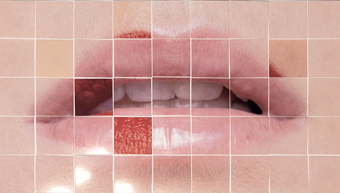
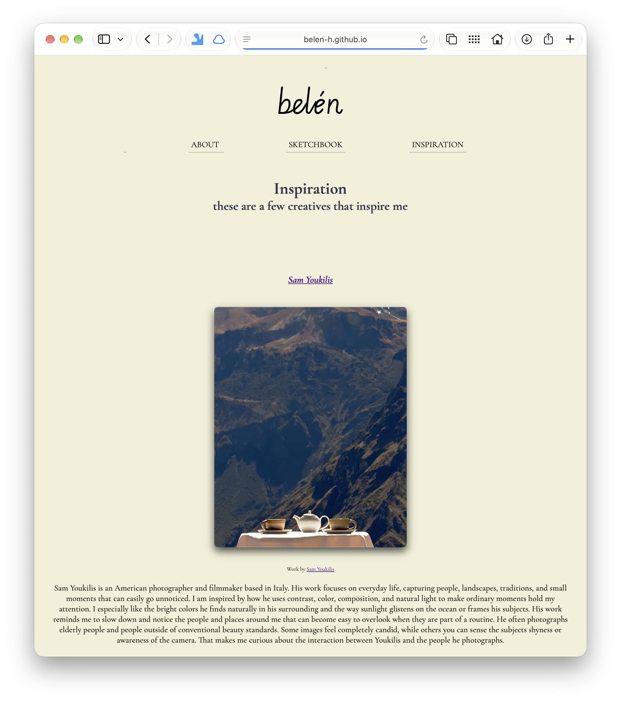
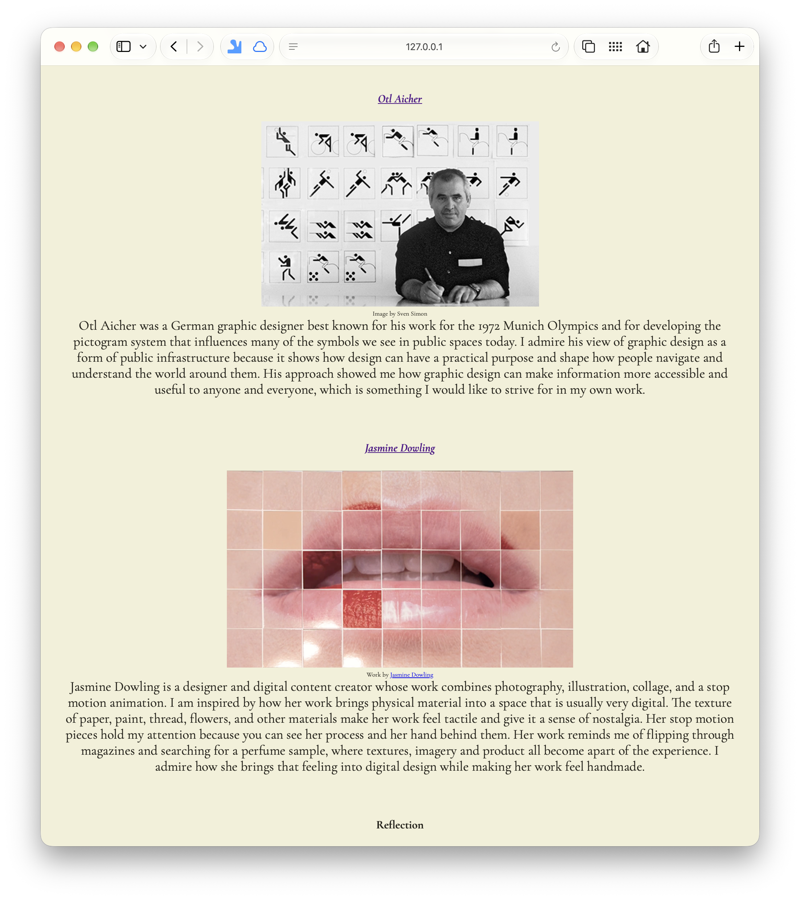
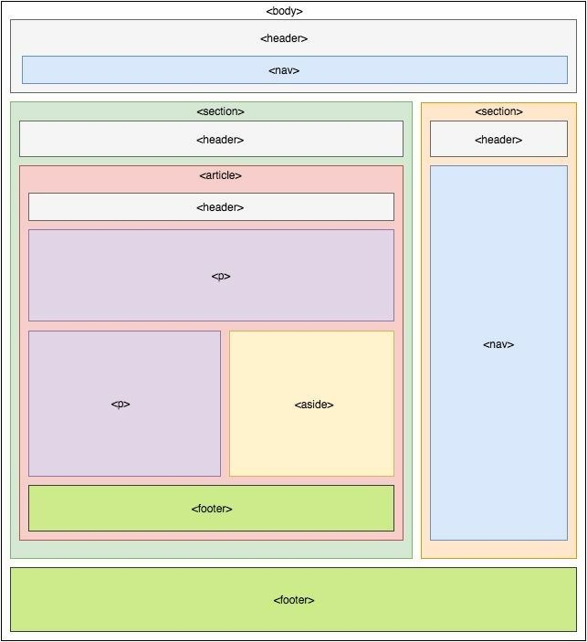
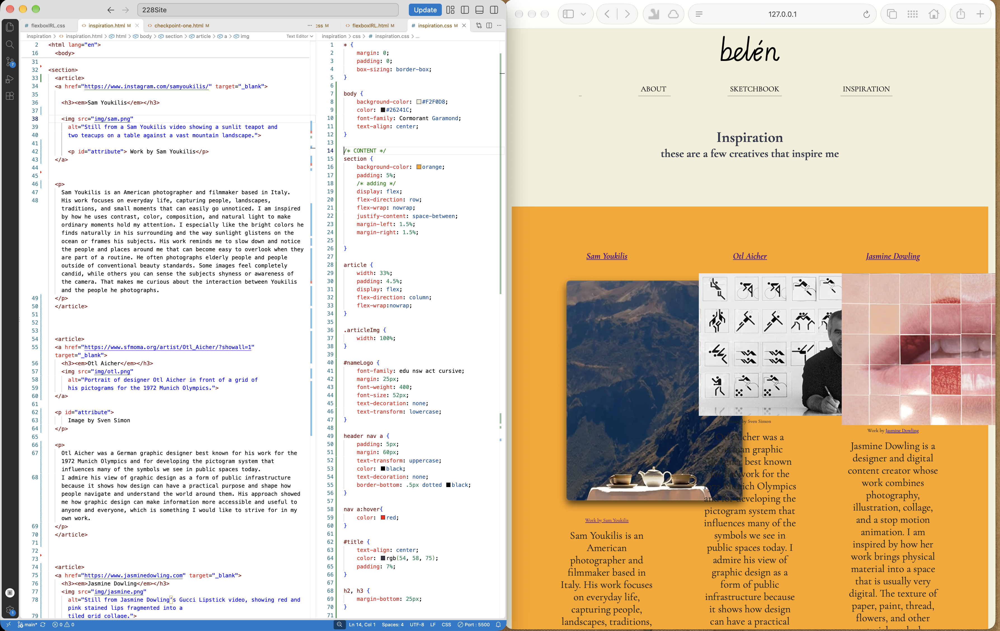
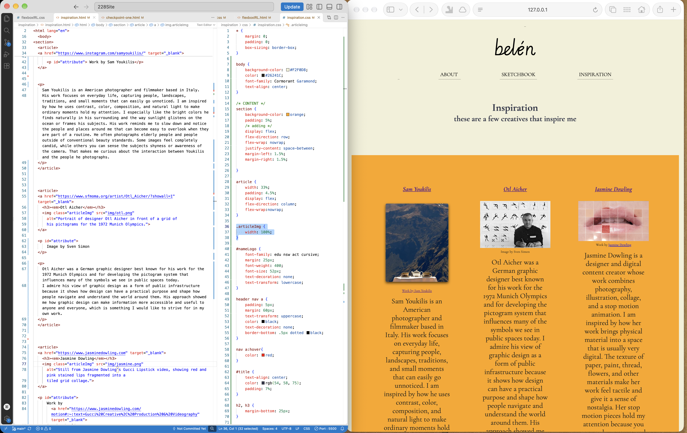
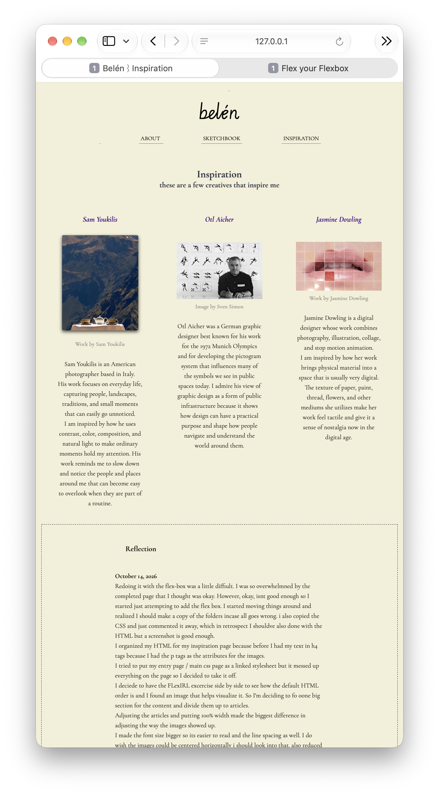
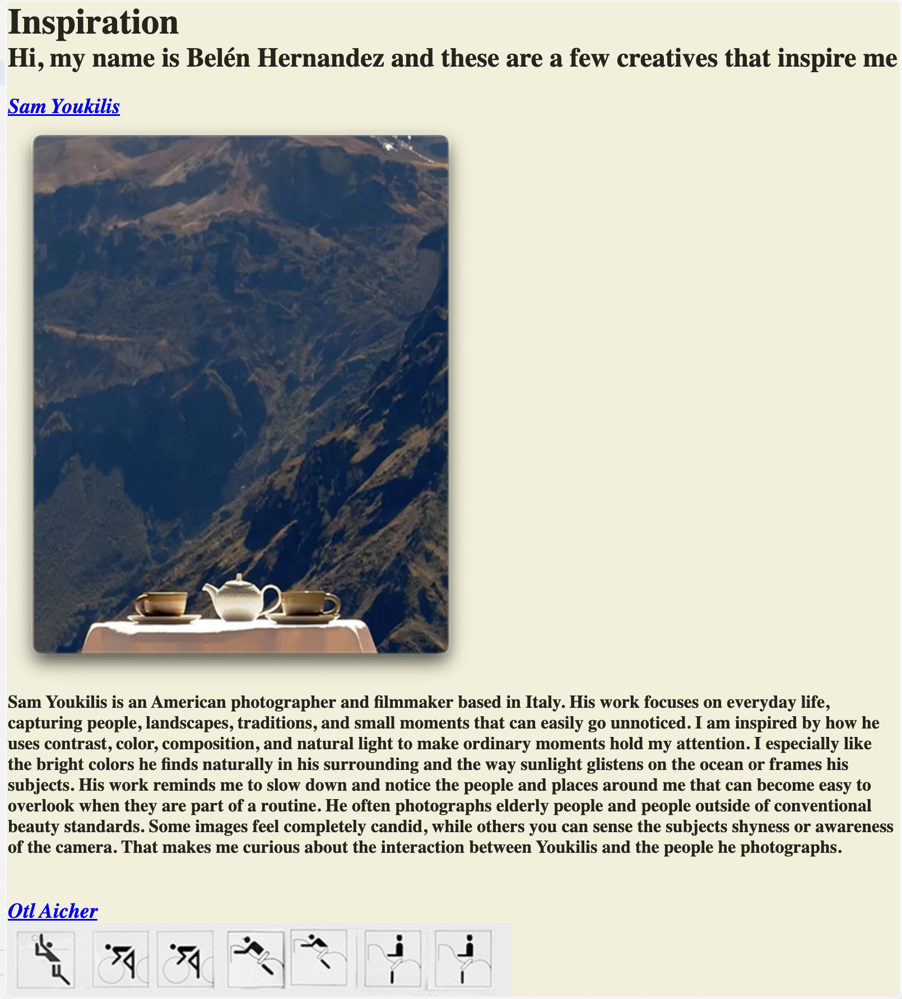

Sam Youkilis

Work by Sam Youkilis
Sam Youkilis is an American photographer based in Italy.
His work focuses on everyday life, capturing people, landscapes, traditions, and small moments that can easily go unnoticed.
His work reminds me to slow down and notice the people and places around me that can become easy to overlook when they are part of a routine.
Otl Aicher

Image by Sven Simon
Otl Aicher was a German graphic designer best known for his work for the 1972 Munich Olympics and for developing the pictogram system that influences many of the symbols we see in public spaces today.
I admire his view of graphic design as a form of public infrastructure because it shows how design can have a practical purpose and shape how people navigate and understand the world around them.
Jasmine Dowling

Work by Jasmine Dowling
Jasmine Dowling is a digital designer whose work combines photography, illustration, collage, and stop motion animation.
I am inspired by how her work brings physical material into a space that is usually very digital. The texture of paper, paint, thread, flowers, and other mediums she utilizes make her work feel tactile and give it a sense of nostalgia now in the digital age.
Process Reflection
October 14, 2026
Redoing my Inspiration page using Flexbox was a little difficult. I initially felt overwhelmed looking at a page I had already completed and thought was fine. However, I knew there was room for improvement, so I started experimenting with Flexbox and moving things around. I quickly realized that I should make a copy of the folder in case everything went wrong. I also copied my original CSS and commented it out so I could refer back to it. Looking back, I probably should have done the same with the HTML, but at least I took a screenshot of the starting point.


Starting Point
One of the biggest changes I made was reorganizing my HTML. Previously, I had placed most of my text descriptions inside h4 tags because I was using p tags for image attribution. I realized that wasnt the best use of heading tags, so I reconsidered how to organize content. I kept the FlexIRL excercise open beside my code to better understand how Flexbox works with the existing HTML strucure. I also found a digram that helped me visualize the parent-child relationships. From there, I decided to place the main content inside one section and seperate each creative into its own article.
I experimented with linking the stylesheet from my main entry page to create more consistency across the website, but it completely changed the styling of my Inspiration page. I decided to remove it from now until I better understand how to manage shared and page specific styles.

Helpful visualization of parent-child relationships
Adjusting the article widths made one of the biggest differences in the layout. I hadn't considered how changing the layout from stacked sections to three columns would affect the images and text. At one point, the images were overlapping because they were too large for their containers. Adjusting their widths helped me understand how the size of a child element relates to its parent container. I also increased the font size and line spacing to make the descriptions easier to read. I shortened some of the text so the columns would feel more balanced. Using temporary borders and background colors helped me visualize the spacing between elements and better understand how margin and padding were affecting the layout. I still want to figure out how to center the images horizontally within their columns.

Flexbox experiment showing oversized images extending beyond their article columns and overlapping neighboring content while testing image widths.

First three-column Flexbox layout with a temporary orange background highlighting the parent container and three articles containing images and descriptions.
After finishing, I went back and reread my original reflection. I remember thinking I had been very meticulous about organizing my HTML, so returning to the same page and finding so many things to change was eye-opening. I can see how much more comfortbale I've become with understanding the relationships between elements and using CSS to control their layout. I'm happy with how the columns turned out, and I like that the reflection now feels seperate from the main content while still being part of the overall design. I think this experience will help me reorganize my other pages and eventually create a shared stylesheet that connects them without taking away their individual styles.

Final Revised Inspiration Page
September 9, 2026
While creating this page, I learned how important it is to organize my code in a way that makes it easy to digest and skim through. I realized that placing opening and closing tags on their own lines and indenting the content inside made it much easier to see which elements belong together. This became especially useful as I added more content to the page and my HTML became longer and I wanted to moe things around.
I organized the names of each creative and their images inside a tags so that both can take visitors to their respective website on another tab. I also added attribution underneath each image using a paragraph tag and used CSS to make the font size extra small. This made me wonder if there is a more specific HTML tag I could use for attribution like a caption tag as I learn more HTML. I also want to eventually create more hierarchy between attribution and my descriptions rather than relying on header tags with bold text.
I am not completely satisfied with the current state of the page because of its simplicity, but I am excited to build on it. WIth more time and CSS knowledge, I would like to center the images, improve the spacing and hierarchy, and experiment with the layout to make the page reflect my own design style.

Finished